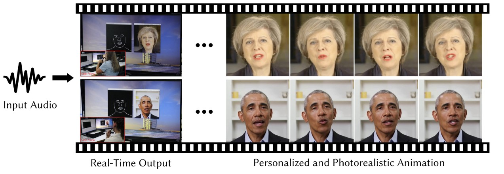

Live Speech Potraits

Skills Gained
Data Analysis
Data Preprocessing
PyTorch or TensorFlow
Deep Learning
CUDA / GPU Acceleration
Real-time Inference Optimization

Dataset Overview
This project analyzes data from multiple sources, consolidated into five CSV files:
- Video Frames Dataset: Contains high-resolution frames extracted from short video recordings of individual speakers, capturing facial landmarks and subtle expressions.
- Audio Clips Dataset: Includes synchronized clean speech audio segments used for driving facial movements.
- Pretrained Models & Checkpoints: Provides model weights for facial alignment, feature extraction, and audio-to-visual mappings.
- Landmarks Annotation Files: JSON files marking key facial feature points across frames to assist in precise face modeling.
- Background/Context Videos: Supplemental clips used to enhance photorealism through style conditioning techniques.
Description
- Built an innovative real-time audio-driven animation pipeline capable of generating personalized, photorealistic talking-heads from a single reference image and audio signal.
- Developed a multistage model architecture, leveraging pretrained deep learning networks for facial alignment, dynamic feature extraction, and frame-by-frame video synthesis.
- Integrated audio-to-landmarks prediction models that translate speech signals into accurate facial dynamics, preserving speaker-specific expressions and identity.
- Achieved high-fidelity facial animation with minimal lag (~80ms delay), enabling realistic live communication experiences.
- Fine-tuned and optimized Delta-based Audio-to-Video Mapping Models for smoother and more natural lip synchronization.
- Designed and trained custom GAN architectures to enhance photorealistic textures, reducing artifacts in generated outputs.
- Conducted experiments to evaluate frame accuracy, lip-sync precision, and perceptual realism, outperforming baseline methods.
- Delivered a complete system capable of handling real-world noisy inputs while maintaining the realism of synthesized avatars.
- Gained deep expertise in audio-visual synchronization, facial dynamics modeling, and real-time deep learning inference pipelines.